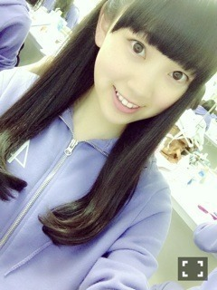

2014/0801Fri17歳の夏
久しぶりに
沢山の星が観たい！
月をずっと観てると
何かに吸い込まれそうだから
あまり観ないようにしていました
謎の幼少期の思い出
突然だけど...最近
［不思議な可愛さ］が好き！
例えばTommy february6さんの
POPな世界観にあえて
それとは合わない様な
物を強引に合わせたら
きっと可愛いんだろうなぁとか
考えたり...
作品にしても
△△だから◇◇っていう
決めつけた考え方は苦手。
当たり前も正解も元々は
誰かが言い出しただけで
どれが正しいとかは
無いはずだし！
だから色んな監督さん
画家さん、プランナーさんが
いるんだなぁって...
私は大半の人が考える
一般的な事の逆、
え？まさか？っていう
予想不可能な作品を
作りたいっていう気持ちが
最近強くて！
きっと今迄そんな作品を見て
きて刺激を受けてこんな変わり者に
なったのかもしれない。笑
映画、写真、絵画、洋服、、
感受性が豊かな人間に
なりたいな
こんばんは
堀未央奈です
最近は頭と動きで
覚える事が多くて
4つの作業を同時進行しています
頑張らねば
ツアーが終わったら
また郡上行きたいな〜
さんぷる工房で
カツオ作りたい。笑
純奈と話していたら突然、
未央奈はアイドルに
なる為に生まれて来たんだよ
真のアイドル！すごいよ
って言われて
驚きました。笑
よく真面目すぎるとか
根がアイドルだとか言われるけど
そんな可愛い性格では無いし
むしろザ・自由人で
ちびまる子ちゃんの現代版な
くらい中身は老けてるから
頭の中が?だらけでした...
純奈は何かを突然言いだすから
びっくりする
私と同じで凄く自由人だなって
思った瞬間 ;ㅿ;
あ、前回のブログの
ピースの手は純奈です！
日奈子っていう回答も
チラホラ
アイスも溶ける季節
いよいよ
8月に入りました！
今年の夏はどんな
夏になるのかワクワクしています
相変わらずの乃木充。
大阪を筆頭に全国ツアーも
始まります
今回のツアーでの私個人の課題は
パフォーマンスで
ファンの皆さんを魅了！
なので全力で燃焼したいです♪♪
練習あるのみ。
よーーーーーし
17歳の夏！！
乃木坂全開だ！
全ツア来てくださる皆さん
最高の夏の思い出を作りましょう

質問返し⌒✶⋆
◎堀ちゃんはこの色と
この色だったら未央奈の
ファンってわかる！とかある？？
教えてください！！
○白ｘピンクです！
うちわ、タオル、この2色
のサイリウムは
本当すぐ分かります♪♪
ライブの外周とかでは
沢山皆さんの
リクエストや要求に
応えるのが楽しいんだ〜(^.^)
沢山うちわとかジェスチャーで
してね！
◎未央奈がメールで
よく使う言葉って
岐阜の方言なんですか？
○そうです！
ため口だと岐阜弁になるから
モバメならでは〜♡♡
◎ツインテールを大人っぽく
楽しむコツを教えてください！
○強く巻かないことかな。
ゆるく細かく！
あとは位置が大切！
耳たぶより少し上
◎夏の野外ライブとか
フェスはめっちゃ好き(・ω・)ノ
みおなはフェスとか行ったり
すんの？(^○^)
○行かない...
いつか行ってみたいな
楽しいの？
◎ジェラトーニくん(？)
ゲットしなかったのかな？
○迷ったけど
今回は買わなかったよ！
◎握手会にも行きたいです！
でも行ったことがないので
よくわかりません(..)
何を話すのかとかどれくらい
話せるのかとか...
よかったらアドバイス
くれませんか？
あと、私は堀ちゃんと
呼んでいるのですが、
他にあだ名とかありますか？
○参考がてらに...
・どこから来たか
・兄弟、姉妹の話し
・TVや雑誌を見た感想
・握手会や番組などで
してほしい髪型をリクエストする
・言ってほしいセリフを頼む
・あだ名を考えてもらう
とか...
私からも結構話すので
大丈夫ですよ〜(^.^)
未央奈、みおちゃん、
ほっちゃんなど任せています！
◎最近ブログやモバメで
出てくるけど、そうめんは
食べれた〜？
あと、そうめんと冷や麦の
違いってなんだろね？
○食べれてないの...
そうめんと冷や麦の違いに
ついて小学生の時
考えてた覚えがあります。笑
あー生姜を加えためんつゆで
そうめんすすりたい(｡>﹏<)
◎みなみおなカワイすぎる(♡ε♡ )
初コメントでーす！！( ^^)/
読んでくれてるかな......??
読んでくれてたら嬉しいな...♡♡♡
○初コメありがとう！
みなみおな〜♡
有難く読んでます ;ㅿ;
◎みおなは、ディズニーの
ポップコーンの味で、
なにがすき〜〜〜？？？？？
○塩！
◎うちも明太子が大好きなんだけど、
未央奈ちゃんの好きな明太子料理は
何ですか??
うちは明太子クリームパスタ
が好きです♪
○明太子フランス！
大好き！
以上
世の若者は夏休みか〜
テレビ局の夏祭りみたいな
催し物を見ると夏だ！って
思う...
小学生、中学生の時に
夏休みの予定みたいな計画表を
自分で作らなくちゃいけなくて
私は予定を細かく詰め詰めに
書くタイプでした。笑
A型に近いO型だから
几帳面なんですよね ;ㅿ;
27日市民プール
28日○○ちゃんと遊園地
29日家族で旅行
30日宿題やる
31日いとこでBBQ
みたいな！
凄く充実していたな〜
活発なイメージより
インドアな印象を持たれる方が
多いですが
日焼けしてて真っ黒で
ショートヘアで
アウトドア派でした
今でも家族旅行とか
計画して何処かへ行くのが好き♡♡
旅行会社とか観光会社で
働くのにも憧れてたくらい。笑
岐阜は本当に自然が
豊かで釣りをしたりBBQを
したり夏休みを充実させるには
ぴったりなんです
温泉行きたいーーーー
そんな明日の握手会は
夏らしく
1〜2部に私服
3〜4部に浴衣
5部に全部別で普通の服屋さんで
探して揃えた耳をすませばの月島雫
を着ます！
寝坊禁止！
気をつけて来て下さい♪♪
未央ちゃんは感性が
変わってるから不思議なんだよ
と今日、怜奈に言われました。笑
確かに普通の女子高生らしく
ないもんな...
そこは自他共に認める...
あ、そうそう
川後さんが
「キルトシューを食べるみたいな
名前の映画...」って言ってて
「ヘイフラワーとキルトシュー
ですか？！」と私が言ったら
「そう！！何で知ってるの？
面白い？」と聞かれ
「大好きな映画です！
面白いです！」と
2人で興奮気味に
ヘイフラワーとキルトシューに
ついてしばらく話しました。笑
何回観た事か...
フィンランドが好きに
なったきっかけの映画♡♡
そんな川後さんが2期生の
何人かにあだ名を
つけてくださったみたいで！
私を含め残りの2期生の
あだ名も気になる(｡>﹏<)
この間1人で
スパイシーカレーを
食べに行きました！
チキンとナスが入ってて
美味しかったけど
想像以上に辛くて
1人で涙目になりながら
完食した。
暑い夏こそ熱い食べ物が
食べたくなる派
皆さんは暑い時何を食べますか？
夏だからって身体を冷やしちゃ
ダメですよ〜
コメント返し
7/29「白玉抹茶」
◎No.2 百香(ももか)さん
未央奈〜♡
今日もおつかれさま\( ˆoˆ )/
握手会まであとちょっと！
楽しみ〜♪未央奈しか！
大好き\( ˆoˆ )/
○百香だ〜♡♡
いつも会いに来てくれて
本当にありがとう ;ㅿ;
早く会いたいな〜
◎No.9 ひろさん
みおなーーー
○なんだい？
◎No.29 なー君さん
みおなんーー浴衣
ぶち可愛い☆〜（ゝ。∂）
もう大好きやわ←←
○ぶち嬉しい(｡>﹏<)
◎No.290 せつまるさん
未央奈〜＾＾
こんばんは、、
いつもモバメありがとう、、
俺もいい年だけど卵焼きは
砂糖多めの方がいいな、、
甘くないと美味しくないもんね
（笑）、、未央奈のTシャツ
予約したけど俺に似合うかな？、
毎日暑いけど頑張ろうね、、、
バイオハザード新作でないかな、、、
○こちらこそ読んでくれて
ありがとうございます♪♪
卵焼き食べたくなってきた〜
Tシャツ純奈も私のやつ
買ってくれたの！笑
もう着てくださったら
堀、歓喜です
バイオハザード♡
以上
橋本さんが後ろから
ぎゅーってしてきて
くださって...♡
「未央奈、猫みたい」と
ボソッと言われました。笑
橋本さんのシュールな所とか
笑いのツボが変わってる所が
好きです
そんな私のいとこは
橋本さん推し
ではでは
今日は絢音が泊まり
に来ています
一緒にダンス確認する！
おやすみおな(｡･ω･｡)
2014/08/01 19:36
コメント(496)
郡上のサンプル工房行ってきたよ～
ちびまるこちゃんくらい老けてんの？w
それは相当だと思うけどww
でも、ほんとにみおなちゃんは
ザ•アイドルだよね！！！
王道の完璧なかわいさ♪
なかなかそーいうひとおらんよ♪
みおなちゃんは逸材やね(///ω///)
みおなちゃんってブログ書くのに
どんくらいかかるの？？
ってふとおもった(￣∇￣)
それは相当だと思うけどww
でも、ほんとにみおなちゃんは
ザ•アイドルだよね！！！
王道の完璧なかわいさ♪
なかなかそーいうひとおらんよ♪
みおなちゃんは逸材やね(///ω///)
みおなちゃんってブログ書くのに
どんくらいかかるの？？
ってふとおもった(￣∇￣)
みおなかわいいいいい(´-ω-`)♡
みおなの変わったキャラすき。
周りに流されない感じがすーごいなんか憧れる！！
ななみんとみおなってなんか似てる(笑)
全国ツアー頑張ってね！！☆彡
神宮行くから ピンク×白のサイリウム持ってきます( ´ ω ` )♡♡♡
みおなの変わったキャラすき。
周りに流されない感じがすーごいなんか憧れる！！
ななみんとみおなってなんか似てる(笑)
全国ツアー頑張ってね！！☆彡
神宮行くから ピンク×白のサイリウム持ってきます( ´ ω ` )♡♡♡
ショック。今日行けなくなりました。握手会楽しんでね。
未央奈のブログ好きです!
わたし彩華って言います、高２で看護師なるために看護学科で頑張ってます
未央奈も頑張って!
未央奈好き(*´-`)
わたし彩華って言います、高２で看護師なるために看護学科で頑張ってます
未央奈も頑張って!
未央奈好き(*´-`)
堀ちゃん夏のドームツアー頑張ろうね♪
福岡の時では精一杯盛り上げていくからね～(*^^*)
福岡の時では精一杯盛り上げていくからね～(*^^*)
アイドルになるために生まれてきた！
感性が変わってるから不思議な娘！
一般的な事の逆！自由人。
これらブログの中に書かれた未央奈に対するメンバーから自分からのメッセージで、大切にしてもらいたいです。
こんばんは 風の回廊です。
風の回廊です。
未央奈のブログの良さについては近況の事や未来の事の周知もあるけれど、自分の今の胸の内について語ることがあるから考え方が伝わりわかりやすいことです。
写メの爪先の方向は矢印の通りで進む方向は決まったはずだから迷わず前進！
しまったなぁ！今日の握手会は旅行で行けなくて！浴衣もだがコスプレかぁ～！
んでも、たぶん、その握手会で未央奈を見た瞬間から何も言えなくなるのは目に見えている(恥)
うぬぬ！しょうがない。
さて、真夏の全国ツアー2014の練習は進んでいますか？
アイスばっかり食べてないですよね？
あ、未央奈はアイスでなくアサイーか？すいか？
あと、約二週間後ですよ。早いなぁ！
うちわとたタオルはもちろん、ピンク×白のサイリュウムを振って応援しに行くからね！
んとね、スマホケースの未央奈バージョンが届いて早速、着けたらいい感じ！友達に自慢するぜぃ！
乃木充してますよ⊿
アイドルになるために生まれてきた娘ってみんなを魅了するオーラがあると思うよ。
未央奈にはオーラを発してると風の回廊も思うから追いかけますよ。
不思議な感覚はスプラッター好きとジブリ好きが同梱しているところかな？うむむだよ。
一般的な事の逆の発想は見る観点が違うくなるから新しい事の始まりになりますね！
その発想が良い方向であれば前進あるのみです
さあさあ、睡魔が来ました
新潟に行ってきます

たのしみおな♪
感性が変わってるから不思議な娘！
一般的な事の逆！自由人。
これらブログの中に書かれた未央奈に対するメンバーから自分からのメッセージで、大切にしてもらいたいです。
こんばんは
未央奈のブログの良さについては近況の事や未来の事の周知もあるけれど、自分の今の胸の内について語ることがあるから考え方が伝わりわかりやすいことです。
写メの爪先の方向は矢印の通りで進む方向は決まったはずだから迷わず前進！
しまったなぁ！今日の握手会は旅行で行けなくて！浴衣もだがコスプレかぁ～！
んでも、たぶん、その握手会で未央奈を見た瞬間から何も言えなくなるのは目に見えている(恥)
うぬぬ！しょうがない。
さて、真夏の全国ツアー2014の練習は進んでいますか？
アイスばっかり食べてないですよね？
あ、未央奈はアイスでなくアサイーか？すいか？
あと、約二週間後ですよ。早いなぁ！
うちわとたタオルはもちろん、ピンク×白のサイリュウムを振って応援しに行くからね！
んとね、スマホケースの未央奈バージョンが届いて早速、着けたらいい感じ！友達に自慢するぜぃ！
乃木充してますよ⊿
アイドルになるために生まれてきた娘ってみんなを魅了するオーラがあると思うよ。
未央奈にはオーラを発してると風の回廊も思うから追いかけますよ。
不思議な感覚はスプラッター好きとジブリ好きが同梱しているところかな？うむむだよ。
一般的な事の逆の発想は見る観点が違うくなるから新しい事の始まりになりますね！
その発想が良い方向であれば前進あるのみです
さあさあ、睡魔が来ました
新潟に行ってきます
たのしみおな♪
こんばんは。
僕は堀ちゃんの個性的なとこが
大好きです。独特だけれど決して
嫌な感じではない、不思議な魅力。
夏になると、僕もカレーとか食べ
たくなる。
飲み物も、冷たいのばかりじゃなくて
ゆっくり過ごせる時は熱いお茶を
少しずつ飲んだりするのも好きだったり
します。冷たいのを一気に流し込むより
体に水分が染み渡るように感じるんだ。
僕は堀ちゃんの個性的なとこが
大好きです。独特だけれど決して
嫌な感じではない、不思議な魅力。
夏になると、僕もカレーとか食べ
たくなる。
飲み物も、冷たいのばかりじゃなくて
ゆっくり過ごせる時は熱いお茶を
少しずつ飲んだりするのも好きだったり
します。冷たいのを一気に流し込むより
体に水分が染み渡るように感じるんだ。
最近気づいたんですけど…掘ちゃんにどハマりしました！笑
乃木どことかお仕事頑張ってくださいねー^ - ^
乃木どことかお仕事頑張ってくださいねー^ - ^
明日握手会行くぜっ！
あっ今日やね笑
体に気を付けて頑張って！
堀ちゃんの
自分があるとこ好き
そんな、自分を持ってる堀ちゃんにおすすめ！
うーばーの「誰が言った」ってゆう曲
大きく共感してくれる歌詞が必ずある！
ウーバーの公式チャンネルにMVがあるよん
まあおすすめは全曲だけど(^-^;
今ピックアップすんならこれ
自分があるとこ好き
そんな、自分を持ってる堀ちゃんにおすすめ！
うーばーの「誰が言った」ってゆう曲
大きく共感してくれる歌詞が必ずある！
ウーバーの公式チャンネルにMVがあるよん
まあおすすめは全曲だけど(^-^;
今ピックアップすんならこれ
みおなーお疲れー！
おっ、おう。寝坊禁止ね。
フイフラワー～ってのはバイオハザードみたいなやつ？
おやすみーおな。
おっ、おう。寝坊禁止ね。
フイフラワー～ってのはバイオハザードみたいなやつ？
おやすみーおな。
みおな、おやすみなさい！
前回の答えじゅんなだったかぁ〜
簡単な問題だったんだね！笑
もう8月になったね〜
全国ツアーもそろそろだ！
大変だろうけど頑張ってね(`･v･´)ゞ
ではおやすみおな(ヽ´ω`)
簡単な問題だったんだね！笑
もう8月になったね〜
全国ツアーもそろそろだ！
大変だろうけど頑張ってね(`･v･´)ゞ
ではおやすみおな(ヽ´ω`)
握手会の時めんたいって言いながら握手レーンはいっていっていい？
握手会たのしんでね〜☻❁
個性的で自分をもっている未央奈が
だいすきだよ
個性的で自分をもっている未央奈が
だいすきだよ
22歳の夏は郡上へのドライブと全国ツアーで終わりそうだよ笑
今日もお疲れ様です。
初コメです！
あえて聞きたいのですが、今年の夏なにしたいですか？という質問は普通なので、今年の夏、何をしたくないですか？
癒されます。
以上
初コメです！
あえて聞きたいのですが、今年の夏なにしたいですか？という質問は普通なので、今年の夏、何をしたくないですか？
癒されます。
以上
未央奈、おはよう。こんにちは。こんばんは。
えっ！？カツオ作りたい？マグロじゃダメなの？笑
現代版ちびまる子かぁ…何か分かる様な気がする。食べ物の趣味とか渋いし、未央奈って洋より和の雰囲気。←伝わりにくかったら許してにゃん(｢･ω･)｢ 笑
日付け変わって８／２。いよいよ個握デビューがやってきたよー。未央奈見た瞬間に頭の中真っ白になりそうだヾ(´Д` 三 ´Д`)ﾉ助けてー。笑
えっ！？カツオ作りたい？マグロじゃダメなの？笑
現代版ちびまる子かぁ…何か分かる様な気がする。食べ物の趣味とか渋いし、未央奈って洋より和の雰囲気。←伝わりにくかったら許してにゃん(｢･ω･)｢ 笑
日付け変わって８／２。いよいよ個握デビューがやってきたよー。未央奈見た瞬間に頭の中真っ白になりそうだヾ(´Д` 三 ´Д`)ﾉ助けてー。笑
もうじきツアーが始まるね。
いろいろと忙しいとは思うけど
体調も気をつけて。(^-^)v
未央奈ちゃんはAよりのOなんだ。
やっぱり同じOでもそこいらへん
が微妙に変わるのかな。
スパイシーカレー美味しそう。
胃が弱っている時とか、カレーが
食べたくなる。
なんか、たくさんのスパイスが
入っていると治るような
気がするから。
自分の知り合いは、ラーメンと
言っていたが、それはないと
思う。
では、(^_^)/
いろいろと忙しいとは思うけど
体調も気をつけて。(^-^)v
未央奈ちゃんはAよりのOなんだ。
やっぱり同じOでもそこいらへん
が微妙に変わるのかな。
スパイシーカレー美味しそう。
胃が弱っている時とか、カレーが
食べたくなる。
なんか、たくさんのスパイスが
入っていると治るような
気がするから。
自分の知り合いは、ラーメンと
言っていたが、それはないと
思う。
では、(^_^)/
堀ちゃん､茨城と岐阜似てるよね？？
明日浴衣良いなぁ( ´艸｀)
地元花火大会でした(´▽｀)
明日浴衣良いなぁ( ´艸｀)
地元花火大会でした(´▽｀)
未央奈、すっごくかわいい写真がいっぱいのブログだね。コメントをいくつか。
几帳面で計画して何処かへ行くのが好きって、未央奈っぽくていいね。僕もO型だけど同じだよ。事前の計画が一番大事で楽しみ、でも何か計画外のことがあったら、O型っぽくなんとかするパターンだよ。
フィンランドってムーミンのイメージだけど、ヘルシンキは静かでいい街だったよ。日本から一番近いヨーロッパだね。
辛いカレーって、僕も大好きだよ。辛いのは苦手で、すぐ涙と汗が出るけど、好きという困った状況だよ。。
未央奈のイメージはそもそも元気なアウトドア派だね。
日本の3大つり目美女は、未央奈と、桐谷美玲、武井咲かな。そういえばハリウッド映画のアジア人女優はいつもつり目だね。未央奈もいつかハリウッド映画に出られるといいね。
全国ツアーでの未央奈のパフォーマンス、期待してますよ。練習がんばってね。
未央奈はアイドルになる為に生まれて来たんだね。真のアイドルってすごいね。さすが未央奈だね。
頭と動きで覚える事が多くて4つの作業を同時進行っていいね。どんどん脳を活性化させていってね。きっといろんなことができるようになってくるよ。
映画、写真、絵画、洋服に、感受性が豊かな人間っていいね。未央奈はアーティストだね。どんどん感性に磨きをかけていってね。
モバメは毎日、未央奈のかわいい写真とおはようからののメッセージを楽しんでますよ。
では、握手会土曜日4部の未央奈の浴衣姿ってすっごく楽しみだよ。でもまた、未央奈のかわいさに見とれてしまって言葉が出なくなったらどうしようね。。。
几帳面で計画して何処かへ行くのが好きって、未央奈っぽくていいね。僕もO型だけど同じだよ。事前の計画が一番大事で楽しみ、でも何か計画外のことがあったら、O型っぽくなんとかするパターンだよ。
フィンランドってムーミンのイメージだけど、ヘルシンキは静かでいい街だったよ。日本から一番近いヨーロッパだね。
辛いカレーって、僕も大好きだよ。辛いのは苦手で、すぐ涙と汗が出るけど、好きという困った状況だよ。。
未央奈のイメージはそもそも元気なアウトドア派だね。
日本の3大つり目美女は、未央奈と、桐谷美玲、武井咲かな。そういえばハリウッド映画のアジア人女優はいつもつり目だね。未央奈もいつかハリウッド映画に出られるといいね。
全国ツアーでの未央奈のパフォーマンス、期待してますよ。練習がんばってね。
未央奈はアイドルになる為に生まれて来たんだね。真のアイドルってすごいね。さすが未央奈だね。
頭と動きで覚える事が多くて4つの作業を同時進行っていいね。どんどん脳を活性化させていってね。きっといろんなことができるようになってくるよ。
映画、写真、絵画、洋服に、感受性が豊かな人間っていいね。未央奈はアーティストだね。どんどん感性に磨きをかけていってね。
モバメは毎日、未央奈のかわいい写真とおはようからののメッセージを楽しんでますよ。
では、握手会土曜日4部の未央奈の浴衣姿ってすっごく楽しみだよ。でもまた、未央奈のかわいさに見とれてしまって言葉が出なくなったらどうしようね。。。
みなみおな大好きです！全握行きました！みおなちゃんがこのコメント読んでくれているのか不安だな…でもファン思いの素敵な子だから大丈夫か！
5部マジくそ見たかった…
明日は握手行けんけど
いつか、めっさ行きたい〜
ななみんのシュールなとこ
俺もめっちゃ好きです，too
明日は握手行けんけど
いつか、めっさ行きたい〜
ななみんのシュールなとこ
俺もめっちゃ好きです，too
みおなおつかれさま～ヾ(･∀･｀*)
予測不可能な作品、めっちゃいいじゃん～！わくわくする^^
そういう自由な感じもちょっと猫っぽい気もする笑
ツアーのパフォーマンス楽しみにしてるよ～(^O^)
夏なんだから楽しむしかない！！
今日朝会社行く時に、プールのバッグ持った男の子が歩いてて、「あー自分も昔、夏休みの午前中に学校行ってプールで遊んでたなあ」って思って癒されました( ´ ▽ ` )
そんな夏の日。笑
ではまたね～ヽ(●’`*)ﾉ
予測不可能な作品、めっちゃいいじゃん～！わくわくする^^
そういう自由な感じもちょっと猫っぽい気もする笑
ツアーのパフォーマンス楽しみにしてるよ～(^O^)
夏なんだから楽しむしかない！！
今日朝会社行く時に、プールのバッグ持った男の子が歩いてて、「あー自分も昔、夏休みの午前中に学校行ってプールで遊んでたなあ」って思って癒されました( ´ ▽ ` )
そんな夏の日。笑
ではまたね～ヽ(●’`*)ﾉ
初コメです！！
私も岐阜県出身で、よく岐阜弁を使ってしまうのですがみおなちゃんは好きな岐阜弁ありますか？？
良かったら教えて下さい＼(^o^)／
私も岐阜県出身で、よく岐阜弁を使ってしまうのですがみおなちゃんは好きな岐阜弁ありますか？？
良かったら教えて下さい＼(^o^)／
おつかれさま。
昔、十七の夏って唄があったって聞いた事がある
seventeenって青春っぽいいい響きだよね～
堀ちゃん？ ちょっとセンチメンタルになってない？
少しホームシック気味？
わかるよ そりゃー故郷に帰りたくなるよね
どーなの お盆休みとか実家に帰れるの？
帰れるんだったら 思いきり田舎の空気吸って
みんーなに甘えて めいっぱいリフレシュしてきな～
そー思う存分奇麗な星も眺めるといいよ！
頑張れ～～っ。
昔、十七の夏って唄があったって聞いた事がある
seventeenって青春っぽいいい響きだよね～
堀ちゃん？ ちょっとセンチメンタルになってない？
少しホームシック気味？
わかるよ そりゃー故郷に帰りたくなるよね
どーなの お盆休みとか実家に帰れるの？
帰れるんだったら 思いきり田舎の空気吸って
みんーなに甘えて めいっぱいリフレシュしてきな～
そー思う存分奇麗な星も眺めるといいよ！
頑張れ～～っ。
みおな！こんばんは。
正解を決めつけないって考え方スゴく共感できる！
なんか普通じゃない変わった視点から物事捉えてみたいっていつも思うよ
けっこうみおなアクティブだったんだね(笑)
よく2期生の娘とお泊まりしてるけど、1期生の人とはお泊まりしたことないの？
かずみんとかとお泊まり楽しそうなイメージ
正解を決めつけないって考え方スゴく共感できる！
なんか普通じゃない変わった視点から物事捉えてみたいっていつも思うよ
けっこうみおなアクティブだったんだね(笑)
よく2期生の娘とお泊まりしてるけど、1期生の人とはお泊まりしたことないの？
かずみんとかとお泊まり楽しそうなイメージ
みおなちゃん、初めまして！
遅まきながら乃木坂46の魅力に目覚めました(^^)！
ところで今日の更新、一挙に何回か分を載せちゃったんじゃない(^^;)？
遅まきながら乃木坂46の魅力に目覚めました(^^)！
ところで今日の更新、一挙に何回か分を載せちゃったんじゃない(^^;)？
ヘイフラワーとキルトシュー見てない、、、。自分にとってフィンランドというとムーミンと牧場の少女カトリ。トゥルクという町があるんだけど、夏、大きな街路樹からタールのような樹液が降ってくるのは、びっくりしたなあ。人は親切。地図を見てると、どこ行くのって話しかけてくるし。ヘルシンキはあそこだけ、別の国みたいに都会だった。というのは去年の夏の思い出。さて、不思議大好き少女みおなの夏はこれからが本番。活躍、期待してます。
みおなー(´･_･`)
握手会行きたいんだけど
考えるだけでも緊張しちゃって握手会当日離せなくなるのが怖くて行けないんよ(T . T)
なんか握手会で、この話はしやすい！とかしてほしい！とかゆーのある？
ごめんねー(´･_･`)
握手会行きたいんだけど
考えるだけでも緊張しちゃって握手会当日離せなくなるのが怖くて行けないんよ(T . T)
なんか握手会で、この話はしやすい！とかしてほしい！とかゆーのある？
ごめんねー(´･_･`)
橋にしゃがむ少女、う～ん、絵になってるね。今日の音楽の日深夜の予定みたいだから１７歳の未央奈は出ないのかな？ 夏の食べ物は、やっぱり焼き肉、辛口のたれにサドンデスソースを追加して食べる。焼肉食べたい。。 暑さに負けないでいっぱい練習して夏の全国ツアー成功させてください！ 今日という日が未央奈にとって良き日でありますように。。
東京に上京してからあまり星が見れなくなったよ(´；ω；`)
田舎は星がいっぱいでいいよねー！
静岡が地元なので、田舎らぶです！！
堀ちゃんも身体だけは気をつけてがんばってねー！＼(^o^)／
田舎は星がいっぱいでいいよねー！
静岡が地元なので、田舎らぶです！！
堀ちゃんも身体だけは気をつけてがんばってねー！＼(^o^)／
初コメ！！！(笑)
みおなのブログは読みごたえがあっていつも楽しみしています。
これからも期待してるので無理しない程度に頑張ってね♪
名古屋でのツアーと個別にいくのが今の楽しみ！
次の更新待ってます！
みおなのブログは読みごたえがあっていつも楽しみしています。
これからも期待してるので無理しない程度に頑張ってね♪
名古屋でのツアーと個別にいくのが今の楽しみ！
次の更新待ってます！
みおなちゃーん♪
確かにみおなちゃん猫っぽい！♡笑
ななみんにぎゅーっされるって
すっごいうらやましいな( ´ ω ` )笑
純奈ちゃんとかは陽菜ちゃんに
あだ名つけてもらったんだよね？
みおなちゃんも早くつけてもらいなー♪
確かにみおなちゃん猫っぽい！♡笑
ななみんにぎゅーっされるって
すっごいうらやましいな( ´ ω ` )笑
純奈ちゃんとかは陽菜ちゃんに
あだ名つけてもらったんだよね？
みおなちゃんも早くつけてもらいなー♪
未央奈応援しています^_^
ブログ更新ありがとう！
ブログ更新ありがとう！
最近星出てないよねー泣
未央奈なら感受性が豊かな人になれるよ♡ww
今日はコメント返しがたくさんあって嬉しいな☆彡
未央奈O型なんだ！一緒やん♪( ´▽｀)
ちなみに父がAで母がOですwww
しかも俺もいろんな人からA型？って言われるよーww
予定表とかもきっちり書くしwww
俺も16歳の夏、楽しむぜ＼(^o^)／
コーセー☆彡
今日個別頑張ってね゛俺は仕事だから参加出来ませんが体調大丈夫ですか？いよいよ全国ツアー迫ってきましたね～俺は仙台と東京に参加します、多分今レッスン大変だと思いますが頑張ってくださいね゛
みおなー(>_<)
明日の握手会行くよ＼(^o^)／
でも、4部からの参加なんだー
そう言えば、関係ない話だけど、
俺8月4日誕生日なんだぁー
握手会近くてラッキーだけど、当日握手会が良かったなぁwww.
みおな〜
今日握手会いくよー
未央奈の浴衣楽しみ‼︎
未央奈の浴衣楽しみ‼︎
俺の実家も結構な田舎なので、星を観るの好きでした！久しぶりにゆっくり観たくなってきました！
モバメの岐阜弁たまらないので、握手会でお会いした時に聞ける様、頑張ります！
モバメの岐阜弁たまらないので、握手会でお会いした時に聞ける様、頑張ります！
おはよー！堀ちゃん！
今日も朝から暑い！！
アイスにかき氷、美味しそう！！
私も夏にカレーが大好きです！！
ではでは
今日も朝から暑い！！
アイスにかき氷、美味しそう！！
私も夏にカレーが大好きです！！
ではでは
夏と言ったらビールと唐揚げ♪〆にラ～麺でしょ！
みおなやー(((o(*ﾟ▽ﾟ*)o)))
なんか今回のブログいっぱい詰まってた感があって
読み終わるとめっちゃみおなのことに詳しくなった気分です！
よいよい(●'ｗ'●)
みおなみおなー
デコだししてみてー(*Vдv艸)
モバメ登録してないんでブログにお願いします！
頼む〜(´；ω；｀)
なんか今回のブログいっぱい詰まってた感があって
読み終わるとめっちゃみおなのことに詳しくなった気分です！
よいよい(●'ｗ'●)
みおなみおなー
デコだししてみてー(*Vдv艸)
モバメ登録してないんでブログにお願いします！
頼む〜(´；ω；｀)
グーグググー♪
おはよークリスティーヌ(*^^*)
今日は握手会♪
もうすぐテイクオフ。早く会いたいな～(^з^)-☆
たのしみおな(*^^*)
秋田のぞぉさん☆
おはよークリスティーヌ(*^^*)
今日は握手会♪
もうすぐテイクオフ。早く会いたいな～(^з^)-☆
たのしみおな(*^^*)
秋田のぞぉさん☆
やっとブログ読んだよww
とりあえず今日は券ないけどみおなコールはするから！笑
あ、ブログの内容は疲れて頭はいんなかったから
とりあえず卵焼きは砂糖でまあまあ甘め！！
えくぼ
みおな～可愛い♪
うん。確かに感性変わってて不思議さんだよね笑
でもそんなみおながすーき!!
ディズニーのポップコーンで塩が好きっておもしろーい笑
うん。確かに感性変わってて不思議さんだよね笑
でもそんなみおながすーき!!
ディズニーのポップコーンで塩が好きっておもしろーい笑
ずっと楽しみにしてたみおなの雫見れない…
パシフィコでもやってくれるよね…？
パシフィコでもやってくれるよね…？


メンバーともすごく仲良いみたいでいいな♪